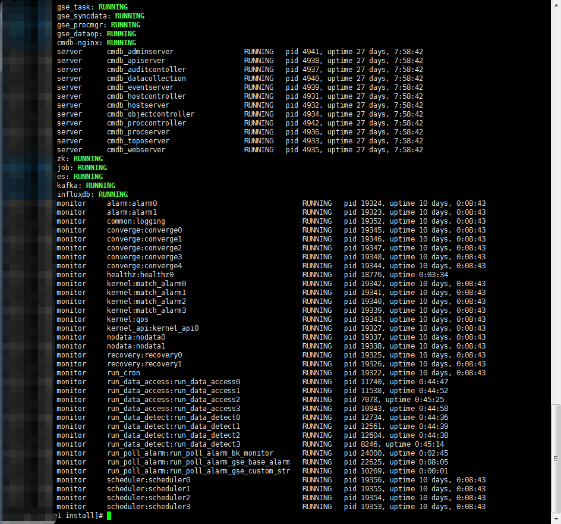
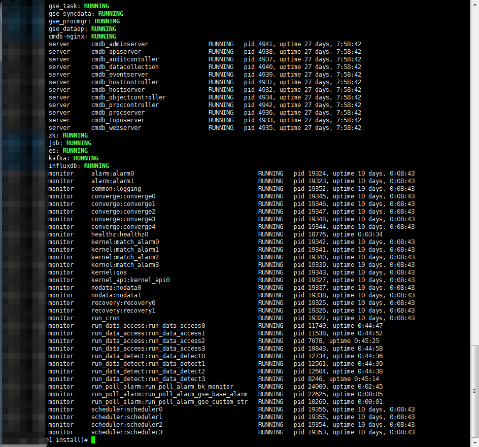
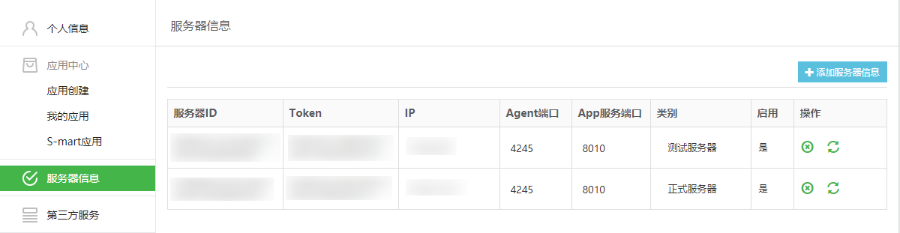

环境验证
从后台验证环境是否安装正常
登录到中控机，通过脚本自带的命令查询蓝鲸后台模块的运行状态
source /data/install/utils.fc # 加载环境变量和蓝鲸安装维护的函数 ./bkcec status all # 查看运行状态 
如上图所示，所有模块状态都是

如上图所示，所有模块状态都是 RUNNING则说明蓝鲸社区版后台模块部署正常。检查 BKDATA 清洗数据的任务是否正常启动
- 社区版 V5.0 及更早版本，在部署 BKDATA 的主机上执行:
crontab -e # 检查是否有包含 databus_etl 的任务- 社区版 V5.1 及之后版本，在部署完 BKDATA 后，检查进程
run_cron是否存活:
检查 BKDATA 运行状态
ssh $BKDATA_IP # 从中控机中跳转到 BKDATA Svr，执行检查脚本检查接口，无报错即正常 ./data/bkce/bkdata/dataapi/bin/check_xxx.sh
检查 Agent 状态是否正常：
- 在中控机执行
./bkcec status gse_agent # 返回 “Running” 说明 Agent 状态正常 # 如果返回 "Exit" 则需要手动安装或者启动 # 手动安装 ./bkcec install gse_agent # 启动 ./bkcec start gse_agent检查健康状态 API：
- 蓝鲸产品后台提供了健康检查的接口，用 HTTP GET 请求访问，接口地址和端口用变量表达：
cd /data/install && source utils.fc # PaaS 注意 URL 末尾带上/ curl http://$PAAS_FQDN:$PAAS_HTTP_PORT/healthz/ # CMDB(beta)，目前版本不够准确 curl http://$CMDB_IP:$CMDB_API_PORT/healthz # JOB curl http://$JOB_FQDN:$PAAS_HTTP_PORT/healthz蓝鲸监控 SaaS 的监控检查接口，可以用浏览器直接访问:
http://$PAAS_FQDN:$PAAS_HTTP_PORT/o/bk_monitor/healthz/
从页面验证功能是否运行正常
请先 配置 host 或者 DNS 解析后，确认访问社区版域名（部署完成后提示的域名）是否正常。
- 配置 host / DNS 解析：配置 DNS 服务或者在本地配置 host 解析请参照 蓝鲸配置文件 global.env 或者中控机下
/etc/hosts。
从蓝鲸工作台-开发者中心-服务器中检查 正式服务器 是否激活。

从蓝鲸工作台-开发者中心-第三方服务中检查 RabbitMQ 服务 是否激活。

登录蓝鲸，从各 SaaS 验证环境功能是否运行正常。
产品功能介绍&使用手册请参考各 产品白皮书
节点管理：
直连区域安装 Linux Agent，Windows Agent 正常。
创建云区域，安装 Proxy，Linux P-Agent，Windows P-Agent 正常。
配置平台：
创建一个业务并分配运维人员。
为步骤 1 中创建的业务创建一个集群，一个模块。
在节点管理中为步骤 1 中的业务安装主机，随后分配到步骤 2 中创建的模块。
作业平台:
快速执行脚本可用。
快速分发文件可用。
定时作业可用。
获取拓扑信息可用。
标准运维：
创建一个流程，开始节点-定时节点（时长 1 秒），结束节点。
使用步骤 1 中创建的流程新建任务并执行，需能执行通过。
故障自愈:
- 验证蓝鲸监控，Zabbix，REST API 告警源可用。
蓝鲸监控：
首页展示正常。
主机监控，主机状态，主机信息，主机详情，装机服务状态图正常。
监控配置正常。